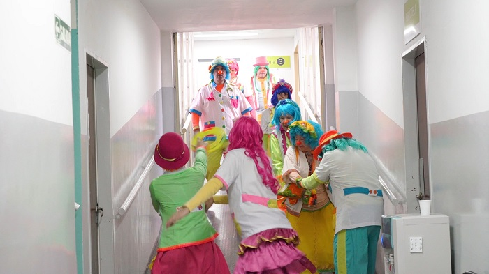

Hecha un vistazo y mira todo lo que podemos hacer los PayaMêdicos

La asociación ofrece una formación de payamédico durante un año, compuesta por la parte teatral o PAYATEATRALIDAD, donde se aprende la técnica del payaso teatral; y una parte teórica de la formación, denominada PAYAMEDICINA abordando temas como la psicología, infectología, neurociencias, tanatología, filosofía, juego, patologías, ética, bioseguridad, etc.
